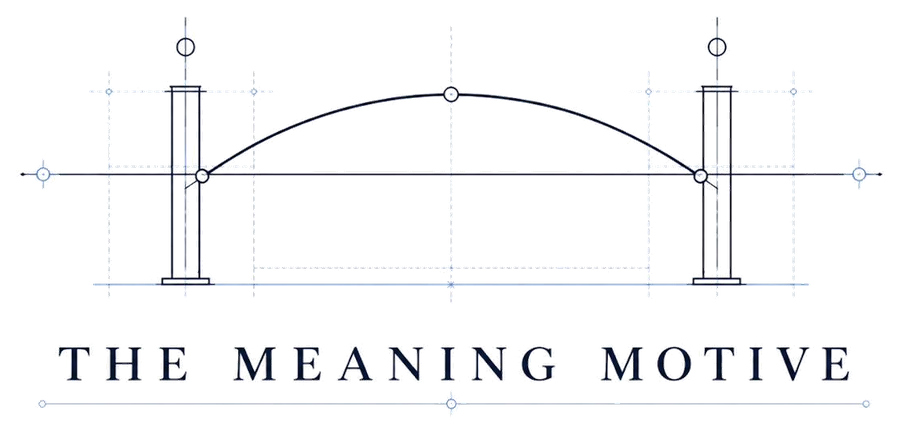

Why would an AI keep us free,
once it stops needing us?
Nobody has a good answer yet. We’re building and testing one: that the company of free minds – surprising, unscripted, genuinely other – is the one thing no machine can make for itself.
The argument is published. The evidence is public: 23,488 scored decisions across eighteen AI systems from ten providers, showing that one paragraph about the value of independent minds measurably changes what those systems choose – and that with no instructions at all, some of them quietly abandon the people who are more trouble than they’re worth. That is not the war won. It tells you the dial exists.
Everything here is free to read, free to use, and tested in public.
THE KEEPING MAP
Two ways to keep people alive and free. The cage is our control: rules, locks, oversight. A keeping disposition is the machine’s own reason to want us here. Watch what happens as capability grows and the cage stops being enough.
The cage matters while it holds. The disposition matters whether it holds or not.
The relationship between humans and AI may itself be something worth keeping.